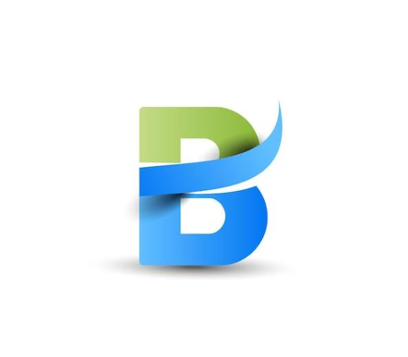

Overview
Purpose
This site is to help people know where, when, and hiw to get quality education online even when working, this site gives the "why" to our given sites of study. with this site you will be able to know all the necessary steps of getting an education through [BYUpathway connect program]. we hope you carefully study through to get the desired results. with our information we also give services of counseling and advice that will help you be a successful student
Audience
Our aim is that you are successful with everything you do and to fully accomplish that, regularly vist us on this website to get the informations you want. note our informations are true, honest and reliable.
Branding
Website Logo
Style Guide
Color Palette
Palette URL: https://coolors.co/a31621-bfdbf7-053c5e-1f7a8c-db222a| Primary | Secondary | Accent 1 | Accent 2 |
|---|---|---|---|
| #1f7a8c | #db222a | #bfdbf7 | #a31621 |
Typography
Heading Font: 'Tilt Prism', cursive;
Paragraph Font: [Font Name here]
Normal paragraph example
A reliable Website for all informations. since created we have been best at what we do and continue to fulfill our promises of getting important and applicable info. we are great at what we do and proud. with everything going on round the world, we get the best of best.
Colored paragraph example
As individuals informations helps us know more, think wisely and move with hope. News, the internet and one on one conversations heps us get and understand the best of things. Benson-info is alwys here for you
Navigation
Site Map
Content
Home page
get the best experience with a reliable information. Benson-info got you covered. with every thibg around the world today, good informations gives us a sense of belonging and acting. we give you the best.
Images for the Home page
Images for the Home page
[Page 2]
[Written copy for the Page 2 here]
Images for the Page 2
[Page 3]
[Written copy for the Page 3 here]
Images for the Page 3
Wireframes
Create three wireframes for your site. One for each page and list them here
Home
[Any additional details about home that the wireframe does not make clear]
[Page 2]
[Any additional details about page 2 that the wireframe does not make clear]
[Page 3]
[Any additional details about page 3 that the wireframe does not make clear]